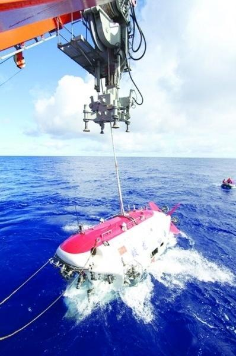
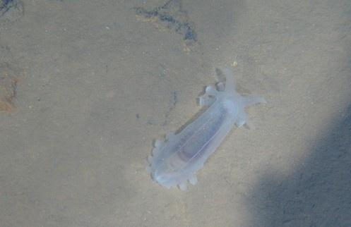
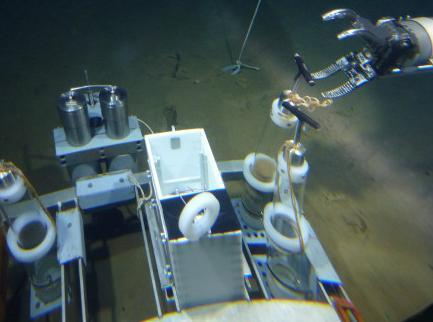
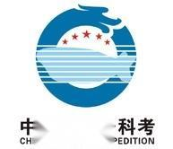

Related pictures
- 
- 
- 
Jiaolong manned submersible is a manned submersible designed and developed by China and is also a major research project in 863 Program. From May to July 2010, Jiaolong manned submersible made several dives in the South China Sea, reaching a maximum depth of 7020 meters.
in 2002, the Ministry of science and technology of China listed the development of deep-sea manned submersible as a major project of the national high-tech research and development plan (863 plan), and initiated the self-design and self-integration development of the "jiaolong" manned submersible. From 2009 to 2012, "the sea trials of the 1000m, 3000m, 5000m and 7000m classes were successively successful. In June 2012, China's manned deep dive record of 7,062 meters was set in the Mariana Trench, which is also the world's record for the largest dive depth of a similar operating submersible. On December 18, 2014, he made his first dive to the Indian Ocean.
on January 14, 2015, the last dive of the first section of the Indian ocean scientific expedition was carried out in the hydrothermal area of Longqi in the southwest Indian ocean, which was also its 9th dive in this section. [2] On March 17, the ship "Xiang Yanghong 09" docked at the dock of the National Deep Sea Base and officially settled in Qingdao.
on may 22, 2016, the last scientific application dive in the yapu trench was successfully completed, with a maximum depth of 6579 meters.
on March 4 and 7, 2017, the "jiaolong" manned submersible carried out the third dive and the fourth dive in the first leg of voyage 38 of China ocean in the hydrothermal area of wocan 1 and daqi in the northwest Indian ocean respectively. Both dives found hydrothermal vents and obtained sulfide samples in the investigation area. On may 23, the "jiaolong" completed its dive in the deepest part of the world. the submarine crew stayed underwater for nearly 9 hours, with a submarine operation time of 3 hours and 11 minutes and a maximum dive depth of 4811 meters.
on may 8, 2018, ding Zhongjun, deputy chief engineer of the national deep sea base management center, disclosed that the "jiaolong" manned submersible was scheduled to carry out a round-the-world voyage from June 2020 to June 2021.
The Jiaolong manned submersible is China's first self-designed and self-integrated operational deep-sea manned submersible, with a designed maximum depth of 7,000 meters. It is also currently the world's deepest diving manned submersible. "Jiaolong" can be used in the vast sea area, which accounts for 99.8% of the world's ocean area, and is of great significance to China's development and utilization of deep sea resources.
After the United States, France, Russia and Japan, China is the fifth country in the world to master deep manned deep diving technology. In the world manned submersible, "Jiaolong" belongs to the first echelon. At present, there are about 90 kinds of manned submersibles in use all over the world, of which only 12 dive deeper than 1,000 meters, and the number of deeper submersibles is even smaller. At present, countries with more than 6,000 meters of manned submersibles include China, the United States, Japan, France and Russia. Except for China, the maximum working depth of the manned submersible of the other four countries is 6,527 meters of Japan's deep submersible. Therefore, the Jiaolong manned submersible successfully reached 7,020 meters of sea floor in the Mariana Trench in the western Pacific Ocean, setting a new world record for manned submersible of the operational type.
from 2009 to 2012, the jiaolong has successively obtained 1000-meter, 3000-meter, 5000-meter and 7000-meter sea trials. Descending to 7,000 meters indicates the maturity of the integrated technology of Jiaolong manned submersible, which indicates that China's deep-sea submersible has become one of the forefront and commanding heights of marine scientific investigation.
at 1147 hours on June 27, 2012, China's "dragon" once again refreshed its "China depth"-diving 7062 meters. Since June 3, "Jiaolong" went to war, it has continuously written five new records of "China depth": 6,671 meters on June 15; June 19, 6965 meters; June 22, 6963 meters; On June 24, 7020 meters; On June 27, 7062 meters. Descending to 7,000 meters indicates that China has the ability to carry people to more than 99% of the world's ocean depths for operations. It also indicates the maturity of the integrated technology of "Jiaolong" manned submersible. It also indicates that China's deep-sea submersible has become one of the forefront and commanding heights of marine scientific research. It also indicates that China's submarine manned scientific research and resource exploration capabilities have reached the international leading level.
at about 16: 30 on June 17, 2013, China's "jiaolong" manned submersible returned to the deck of the mother ship from the bottom of a cold spring area in the south China sea. three divers stepped out of the cabin, marking the successful completion of the first diving mission of the "jiaolong" on its first experimental application voyage.
since 2013, jiaolong has officially entered the experimental application phase. In 2017, on June 13, local time, Jiaolong successfully completed the last dive in the third leg of ocean voyage 38, marking the successful completion of all dives in the pilot application voyage.
as of November 2018, jiaolong has successfully made 158 dives.
on February 28, "jiaolong" manned submersible carried out its first test dive after overhaul and technical upgrade in the test pool of the national deep sea base. This marks the completion of the overhaul and technical upgrade of the "Jiaolong" and the completion of the land-based work such as system inspection, maintenance, system upgrade and general assembly commissioning, which has officially entered a new stage.